Biodiversity in National Parks
On Earth, there are an estimated 8.7 million living species. Each is linked to another, producing a complicated web of life. As a result, approximately 100 extinctions per million species occur each year; exotic and invasive species replace native species, disrupt natural systems, and decrease life’s variety. In addition, climate change, diseases, land conversion and fragmentation, and other stressors exacerbate biodiversity decline.
To explore this, I interpreted biodiversity data from the National Park Service, particularly around the various species observed in different national park locations. I attempted to view my work from the perspective of a biodiversity analyst for the National Park Service. The National Park Service wants to ensure the survival of at-risk species and maintain biodiversity within their parks. Therefore, my main objectives were to understand species’ characteristics, conservation status, and those species’ relationship to the national parks. The following are some questions I posed:
- What is the distribution of conservation status for species?
- Are certain types of species more likely to be endangered?
- Are the differences between species and their conservation status significant?
- Which animal is most prevalent, and what is their distribution amongst parks?
You can find the data behind this project here.
Note: The data was extracted on June 20, 2021.
The project can be viewed on GitHub.
Preparation
I utilized Jupyter Notebooks in Visual Studio Code for this project. In addition, I used the Python libraries pandas, NumPy, Matplotlib, and seaborn to aid in my data preparation, analysis, and visualization. Once I loaded the data into a data frame, I took a top-level look at its contents.
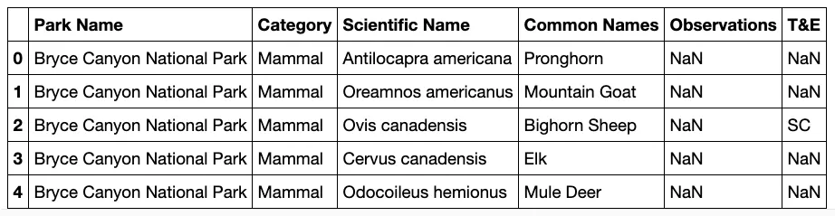
As I first looked at the dataset, I wondered what the column title T&E meant. I had to refer to the source to learn that it was shorthand for “Threatened and Endangered.” To make things more straightforward, I changed the name of the column to Conservation Status.
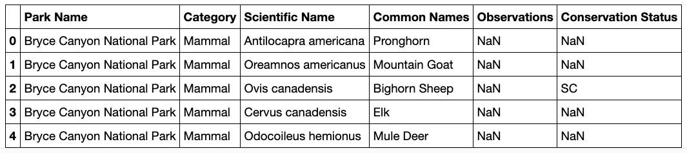
Next, I discovered that there are 35,716 rows and six columns in the data frame. As I explored the data more in-depth, I decided to find the number of distinct species present: 33,628 — WOW! Then, I wanted to see the number of classified living creatures represented in the data. There are 14, including animals and plants. After that, I tried to drill down to see the size of each Category. Insects have the largest share of species with 14,053 category entries, and reptiles are the smallest at 99.
Another column I wanted to explore is Conservation Status. It has five categories: SC, T, DM, E, and nan (not a number) values. (Here, nan denotes that these species don’t have conservation status.) Instead of leaving the values ambiguous, I decided to recheck the source for their proper terms and update them accordingly.
Next, I wanted to view the breakdown of the categories in the Conservation Status column. There are 35,090 nan values, 597 species of concern, 13 endangered species, seven threatened, and 9 in recovery. The last tasks I performed before initiating my proper analysis were to check the number of parks and species observations in the dataset. There are only four parks, and there are 306,120 total sightings logged in the data set; that’s a lot of viewings!
Analysis
To begin analyzing the data, I first cleaned and explored the Conservation Status column. It has a few possible values:
- Species of Concern: declining or appear to need conservation
- Threatened: vulnerable to endangerment soon
- Endangered: seriously at risk of extinction
- In Recovery: currently neither in danger of extinction throughout all or a significant portion of its range.
During my initial exploration, I noticed many nan values, which were not desirable, so I converted them to be No Intervention. Next, I examined the different categories nested in the Conservation Status column, except those that do not require an intervention.
For those with the Endangered status, five are mammals, and four are birds. However, there are six birds and three mammals with the In Recovery status, which could mean the birds have bounced back more than the mammals.
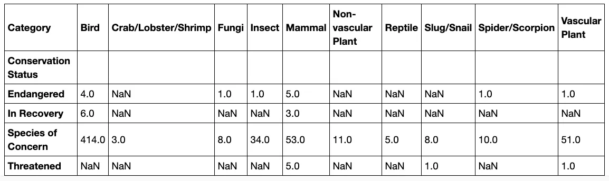
That would be encouraging news since there are more birds in the Species of Concern category than any other variety.
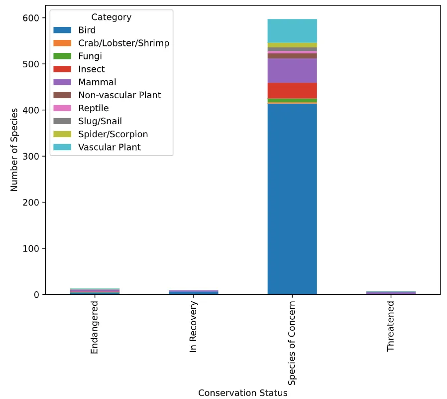
Next, I wondered if certain species are more likely to be endangered. To answer this question, I first created a new column dubbed Is Protected, which included any species with a value other than No Intervention. Then, I grouped the column by Category and whether that category is protected or not. From the table below, it’s easy to see that birds, vascular plants, and mammals have a higher number of species protected.
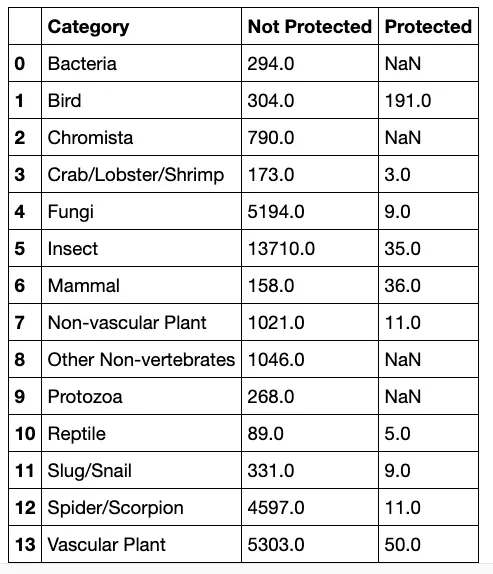
Plain-Jane numbers are not always the most useful statistic. Therefore, it’s also crucial to calculate the rate of protection that each category exhibits in the data. For example, approximately 19 percent of mammals and 39 percent of birds were under guard from the following table.
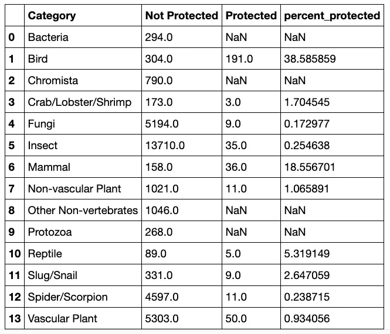
Statistical Significance
I ran a couple of chi-squared tests to see if different species have statistically significant differences in conservation status rates. To start, I created a contingency table.
For the first test, I examined the difference between mammals and birds. The result indicated that there doesn’t seem to be a significant relationship between mammals and birds, so the next pair I tested the difference between was reptiles and mammals. According to the chi-squared test I ran, the difference between reptiles and mammals is statistically significant; mammals have a significantly higher rate of needed protection than reptiles.
Species in Parks
The next set of analyses come from species sighting data. First, I looked at species’ Common Names to get an idea of the most prevalent animals in the dataset. Next, I split the data up into individual names. Then, I cleaned up duplicate words in each row to not count more than once per species. Next, I collapsed the words into one list for easier use. After that, to make the remainder of my analysis less complicated, I set all No Intervention values under the Observations column to 0 and the number type to float.
At this point, the data was cleaned up enough to count the occurrence of each word. As such, I determined that the phrase Bat occurred the most.
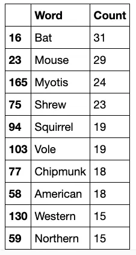
There are several different scientific names for other bats in the data, so I wanted to figure out which rows of species referred to bats. To that end, I created a new column made up of boolean values to check if is_bat is True.
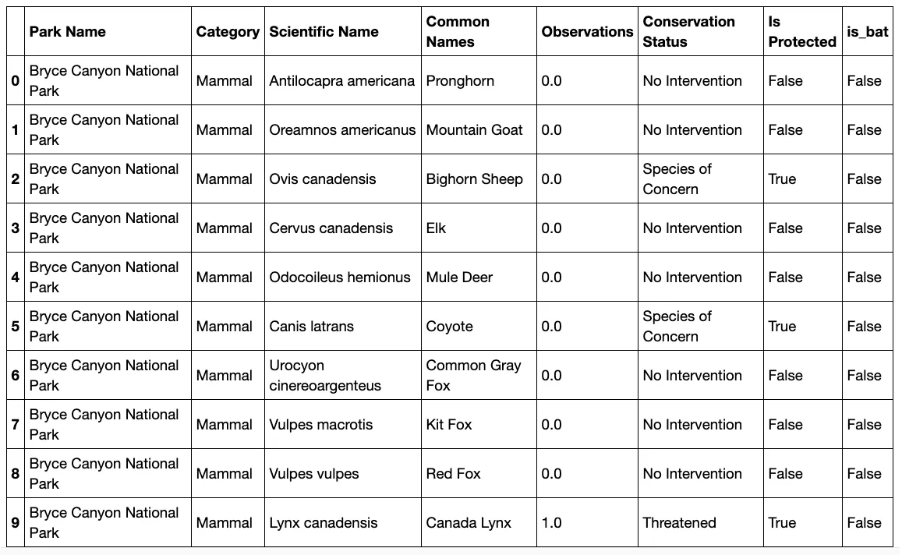
Great Smoky Mountains National Park observed the most bats, while Bryce Canyon National Park detected none.
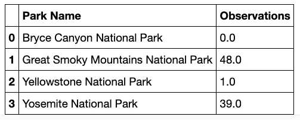
I wanted to see each park broken down by protected bat sightings vs. non-protected bat sightings. Except for Bryce Canyon National Park, every place has more sightings of protected bats — a good sign!
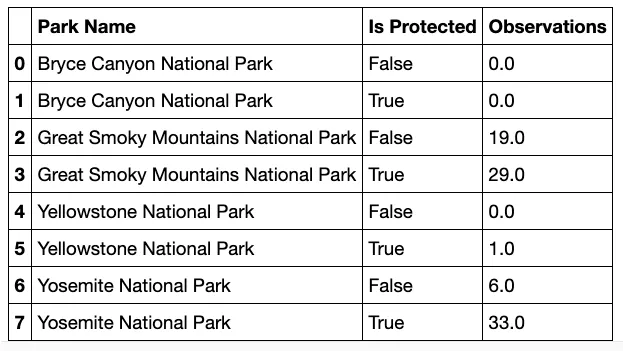
According to the graph below, there are more sightings of protected bats than non-protected species. The national parks are doing a great job protecting their bat populations!
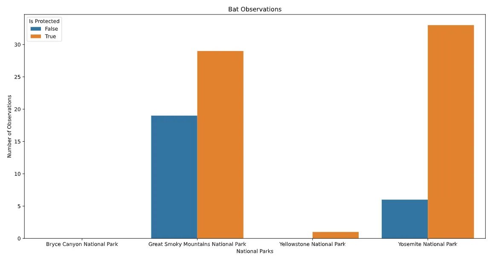
Conclusion
This project makes several inferences about the various species in four of the National Parks that comprise this data set. I was also able to answer the questions first posed in the beginning:
- The vast majority of species were not part of the conservation effort (33,473 vs. 377).
- Mammals and birds are the most protected species.
- While mammals and birds did not significantly differ in conservation percentage, mammals and reptiles did.
- Bats were sighted the most, and they were most likely to be found at Great Smoky Mountains National Park.
The National Park Service is staunchly involved in the preservation of a variety of environments. National parks are becoming vital biodiversity reserves in the wake of growing global threats. However, we need help to improve and expand biodiversity conservation efforts.
According to the National Park Service, approximately 80 to 90% of living organisms in our national parks remain unknown. Biodiversity discovery activities often require only excited minds and willing hands, not expertise. Children and non-scientists alike can help with conservation efforts. In addition, parks can develop new, engaging relationships with diverse audiences to discover life on our lands.
Public involvement and education can yield an exponential increase in awareness of and motivation for stewardship of biodiversity. By working together, we can encourage a public who understands how biodiversity supports the fabric of our lives. We can begin to seed this understanding into our cultural DNA and how we engage with the living world through that knowledge.